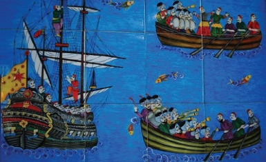

Müverrih Peçevî İbrahim Efendi cellât mezadı ve uğursuz eşyalar üzerine son derece etkileyici bir hikaye aktarmaktadır:
16. yüzyıl sonu saray ricalinden Kapıağası Gazanfer Ağa, Padişah III. Murat üzerindeki sonsuz nüfuzu sayesinde rüşvet yolundan büyük bir servet yapmıştı. O zamanlar İstanbul’da Rüstem Ağa isminde namlı bir saatçi ve kuyumcu vardı. Gerçekten büyük sanatkârdı ve Gazanfer Ağa bu zata fevkalâde kıymetli elmaslarla süslü bir koyun saati[8] yaptırmıştı. Saatin mücevherlerini de kendisi vermişti. Kapı Ağası Gazanfer Ağa cellâda verilince, Ağa’nın kıymetli taşlarla süslü saati koynundan çıkmış, cellâdın eline düşmüştü. Cellâtlar başlı başına bir servet olan bu saat için bir mezat yaptılar. Saati cellât mezadından Tırnakçı Hasan Paşa satın almıştı. Kısa süre sonra Tırnakçı Paşa da idam olundu, saat yine cellât mezadına düştü. Bu sefer de bu harikulâde güzel saati pek ucuz bir bedel karşılığında Kasım Paşa satın aldı. Bir iki ay geçmedi, Kasım Paşa da cellâda verildi, saat onun da koynundan çıktı ve üçüncü defa cellât mezadına düştü. Bu sefer de Gazanfer Ağa’nın uğursuz saatini Sadrazam Derviş Paşa satın aldı ve “Civan Bey” lakaplı kardeşine hediye etti. Civan Bey’in asıl adı bilinmemektedir; çünkü pek genç yaşında, yani tüysüz bir delikanlı iken sadrazamın himayesiyle Eğriboz Sancak Beyliği’ne tayin edilmiş ve “Civan Bey” dene dene adı unutulmuştur.
Müverrih Reçeli İbrahim Efendi ile bu Civan Bey Eğriboz’daki Bey konağının deniz üstüne kurulmuş salaş taraçasında sohbet ediyorlarmış. Söz saatten açılmış. İbrahim Efendi de saat meraklısı imiş. Civan Bey koynundan çok süslü bir saat çıkararak müverrihe göstermiş. İbrahim Efendi: “Ömrümde bu kadar güzel saat görmedim!” deyince
Civan Bey de saatin hikâyesini anlatmış. Peçevî elindeki saati hemen bırakarak “Bu nasıl hediye! Böyle uğursuz saati insan düşmanına vermez!” demiş. Bu söz Civan Bey’i etkilemiş, hemen hançeriyle saatin elmaslarını çıkarmış ve bir çekiç ile de çarklarını kırarak denize atmış...
Denizin dibinde saatin parıltısı bile görülüyormuş. Civan Bey’le İbrahim Efendi taraçada otururlarken bir atlı gelmiş, Civan Bey’e vazifesinden azledildiğini tebliğ etmiş. Civan Bey şaşırmış: “Azlimizi gerektiren bir şeyimiz yok idi!” demiş. Gelen adam: “Beyim! Sadrazam Derviş Paşa idam olundu. Sizin de idamınız için ferman çıkıp Bostancıbaşılara gönderildi, ama sonra şefaatçileriniz himmet ettiler. İkinci bir ferman ile ben gönderildim ve idamınızla görevlendirilenlere ancak yarım saat önce yetişebildim!” cevabını vermiş.
Bu olayı aktaranlar der ki, ikinci fermanı getiren adam, idam fermanını getirenlere Civan Bey meşhur saati çekiç ile kırdığı anda yetişmişti!

Osmanlı’da bir düğün minyatürü